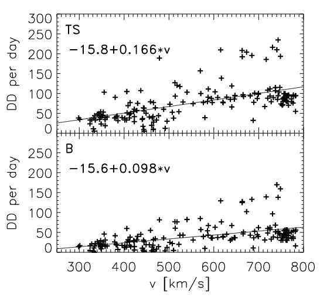

Solar wind discontinuities spatial evolution in the outer heliosphere
Publications
Introduction
Juno Orbit
- Five-year cruise to Jupiter from 2011 to 2016
- One earth flyby in 2013
- Nearly the same Heliographic latitude as Earth
Motivations
Studying the radial distribution of occurrence rate, as well as the properties of solar wind discontinuities may help answer the following questions:
How does the discontinuities change with the radial distance from the Sun?
How is solar wind discontinuities formed? What is the physical mechanisms?
Generated at or near the sun?
Locally generated in the interplanetary space by turbulence?
Joint observations of JUNO & ARTEMIS & Other missions really provides a unique opportunity!!!

To eliminate the effect of the solar wind structure, we use data from other missions (mainly at 1AU) to provide a way of normalization.
Dataset, models, and methods
Results
Occurrence rate

Properties
{kind=link}
Appendix
{kind=link}
{kind=link}
Related works
- Radial distribution
- Properties
- Vasko et al. (2022)
Typical rate of occurrence is about 50 per day at 1AU

![Histograms as a function of heliocentric distance of (a) the number of events, (b) the PSP detection time, and (c)–(e) the occurrence rates of the total IDs, RDs and TDs. Panel (f) shows the ratio of RD occurrence rate to TD occurrence rate. The orange curves in panels (c) and (d) are the power-function fittings of ID and RD occurrence rates, with the coefficient of determination R2 being 0.983 and 0.985, respectively. The uncertainties of the power-law indices correspond to 95% confidence bounds.](images/liu2021_fig2.png)
Note

![The properties of a rotational discontinuity (RD) detected at 0.126 AU on 28 January 2020. (a) The magnetic field magnitude and three components in Radial‐Tangential‐Normal (RTN) coordinate system, (b) the magnetic field in local magnetic normal (LMN) coordinate system, (c and d) the proton velocity in RTN and LMN coordinate systems, (e) the proton density, (f) the proton thermal pressure, the magnetic pressure and the sum, (g) the tangential components of the electric field in LMN coordinate system in the RD rest frame, (h) the position, orientation, and motion of the RD, (i–k) the distributions of BL, JM, and J · E across the RD, (l and m) the jump conditions across the RD. In (h), the cyan plane and arrow represent the RD and its motion vector, and the yellow curve shows the PSP orbit. In (j), both the colors and the curve correspond to the values of JM, and two vertical dashed lines indicate the area of $\vert {J}_{M}\vert > \frac{1}{3}\text{max}\left(\vert {J}_{M}\vert \right)$ whose width is defined as the half thickness of the discontinuity. In (m), the solid lines present the actual upstream and downstream velocities, while the dashed lines show the theoretical downstream velocity to satisfy the Walén relation.](images/jgra57047-fig-0002-m.jpg)
References
Liu, Y. Y., H. S. Fu, J. B. Cao, C. M. Liu, Z. Wang, Z. Z. Guo, Y. Xu, S. D. Bale, and J. C. Kasper. 2021. “Characteristics of Interplanetary Discontinuities in the Inner Heliosphere Revealed by Parker Solar Probe.” Astrophysical Journal 916 (2): 65. https://doi.org/10.3847/1538-4357/ac06a1.
Söding, A., F. M. Neubauer, B. T. Tsurutani, N. F. Ness, and R. P. Lepping. 2001. “Radial and Latitudinal Dependencies of Discontinuities in the Solar Wind Between 0.3 and 19 AU and -80\(^\circ\) and +10\(^\circ\).” Annales Geophysicae 19 (7): 667–80. https://doi.org/10.5194/angeo-19-667-2001.
Vasko, I. Y., K. Alimov, T. Phan, S. D. Bale, F. S. Mozer, and A. V. Artemyev. 2022. “Kinetic-Scale Current Sheets in the Solar Wind at 1 Au: Scale-Dependent Properties and Critical Current Density.” Astrophysical Journal Letters 926 (2): L19. https://doi.org/10.3847/2041-8213/ac4fc4.